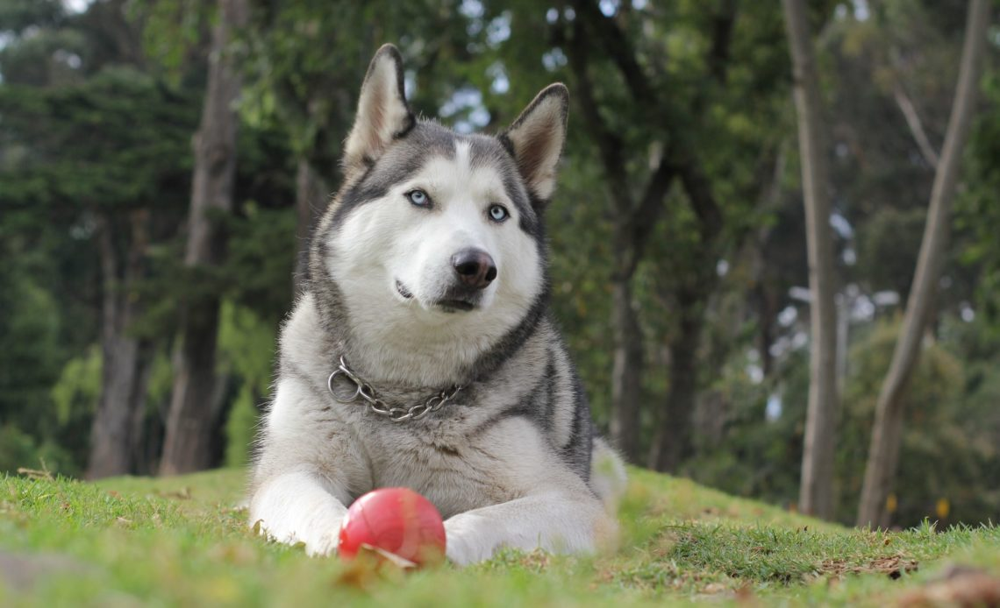

Хаски очень популярны среди собаководов благодаря своей внешней схожести с волками и общительному характеру.
Расскажем самые интересные факты о породе.
-
Первые сибирские хаски были выведены чукотскими эскимосами. Эти собаки могут похвастаться своей скоростью
и выносливостью. Это не удивительно, ведь их изначально выводили для бега в упряжках. Хаски должны были
перевозить людей и небольшие грузы на большие расстояния при низких температурах.
-
Хаски часто путают с маламутами. Хотя эти породы похоже внешне, но они обладают совершенно разными
характерами и качествами. Хаски общительные и выносливые, а более крупные маламуты — спокойные и
сильные.
- Хаски по имени Балто известен во всем мире. Именно он в 1925 году возглавлял упряжку, которая доставила
лекарство от дифтерии в город Ном. Собаки преодолели более 600 км всего за пять дней. В Нью-Йорке в честь
героической собаки установлена бронзовая статуя. В 1995 году про Балто был снят анимационный мультфильм.
На фото Балто крайний справа.
У хаски есть дополнительная мигательная мембрана, которая защищает глаза от непогоды. Кроме того, данная
порода неплохо видит в темноте.
В период Второй мировой войны хаски перевозили боеприпасы и медикаменты. Они также участвовали в военных и
спасательных операциях.
У хаски особенный метаболизм. Эти собаки могут долго находиться без еды. При этом их работоспособность
ничуть не снижается.
Хаски – ездовые собаки.
Хотя у других пород голубые глаза встречаются редко, у хаски это характерная особенность. Реже встречаются
особи с карими или янтарными глазами. Также нередко у этой породы встречаются особи с глазами разного цвета.
Хаски спят, свернувшись клубочком и прикрывая нос хвостом. Так в холодную погоду они сохраняют тепло.
Хаски обожают копать. В природе они выкапывают в снегу норы, чтобы переждать непогоду. Во дворе дома хаски
могут раскапывать глубокие ямы просто потому, что им некуда девать энергию.
Эта порода идеально подходит для тех, кто не любит собачий запах. Шерсть хаски почти ничем не пахнет. Кроме
того, эта парода очень чистоплотна. Собаки любят вылизывать себя, почти как кошки.
Хаски может достигать скорости до 45 км/ч. Это не самая высокая скорость среди всех пород, при этом в плане
выносливости хаски нет равных. Собака может преодолевать около 240 км в день.